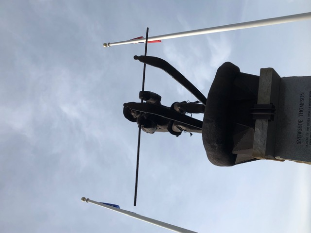
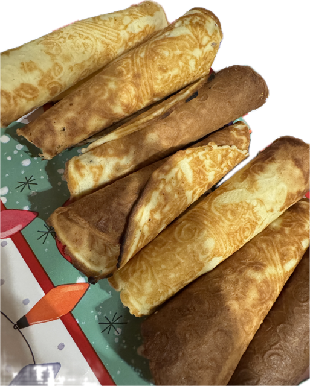

trillebår
wheelbarrow
People Lost to the World; Uncle Sam Needs a Mail Carrier

INSCRIPTION:
SNOWSHOE THOMPSON
A HERO OF THE SIERRA NEVADA MOUNTAINS!
PROBABLY THE FIRST SKIER OF THE WEST. THIS VIKING SON OF NORWAY EXEMPLIFIED THE SPIRIT OF A TRUE PIONEER. STRONG, DARING, FAITHFUL AND COURAGEOUS
HE WAS THE ANSWER TO CALIFORNIA'S MOTTO
"BRING ME MEN TO MATCH MY MOUNTAINS" FOR 20 YEARS HE WAS THE WINTER LIFELINE BETWEEN THE NEW STATE OF CALIFORNIA AND THE LAST WITH A REGULAR MAIL SCHEDULE BETWEEN PLACERVILLE, CALIFORNIA AND
GENOA, NEVADA, AND OTHER ISOLATED
HAMLETS OF THE MOTHER LODE COUNTRY
MAIL NEWS OF THE WORLD MEDICINE SUPPLIES AND EQUIPMENT ARRIVED ON THE STURDY SHOULDERS OF THIS GIANT SNOW VIKING OVER GREAT SNOWDRIFTS THROUGH RAGING WINTER STORMS WITH PACKS OF UP TO
100 POUNDS HE MADE HIS APPOINTED ROUNDS HIS DARING RESCUES ERRANDS OF MERCY AND MANY KINDNESSES MADE HIM A LEGEND IN HIS OWN TIME HE WAS BORN JOHN TOSTENSEN AT TINN IN TELEMARK,
NORWAY APRIL 30, 1827, HE DIED MAY 15, 1876
AT THE AGE OF 49 HE RESTS AT THE BASE OF THE MOUNTAINS HE LOVED BY THE SIDE OF HIS WIFE AND SON IN THE CEMETERY AT GENOA NEVADA A SIMPLE HEADSTONE ENGRAVED WITH A PAIR OF SKIS MARKS HIS
GRAVE
ERECTED BY
SNOWSHOE THOMPSON LODGE NO 78
SONS OF NORWAY, YUBA CITY, CALIF MEMORIAL COMMITTEE
HAROLD MOORE, A.J. MAC Mc CABE, STANLEY MOE SCULPTOR
ANGUS KENT LAMAR
trillebår
wheelbarrow
I Jesu navn går vi til bords, og spiser, drikker på ditt ord. Deg, Gud til ære, oss til gavn, så får vi mat i Jesu navn. Amen.
Krum Kake

Put about 1 teaspoon of batter in the krum kake iron and bake until brown on both sides. Roll quickly around a stick to form a cone shape.